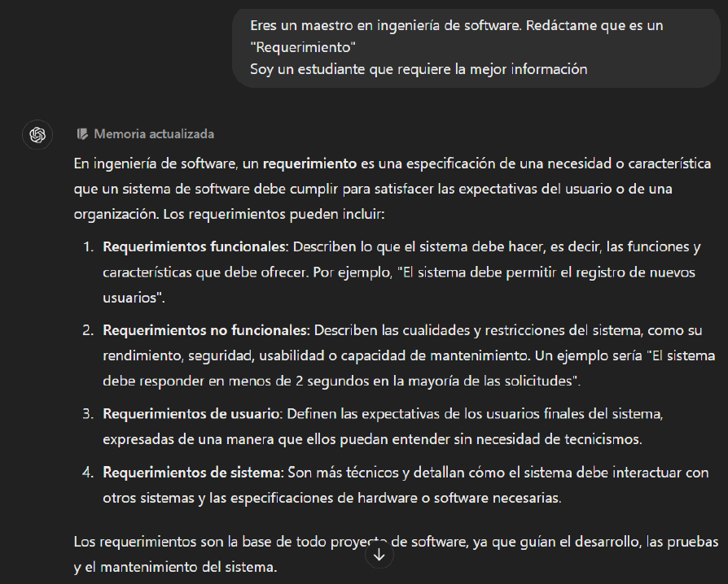
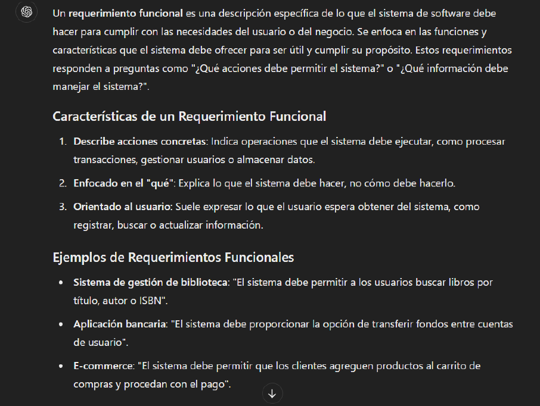
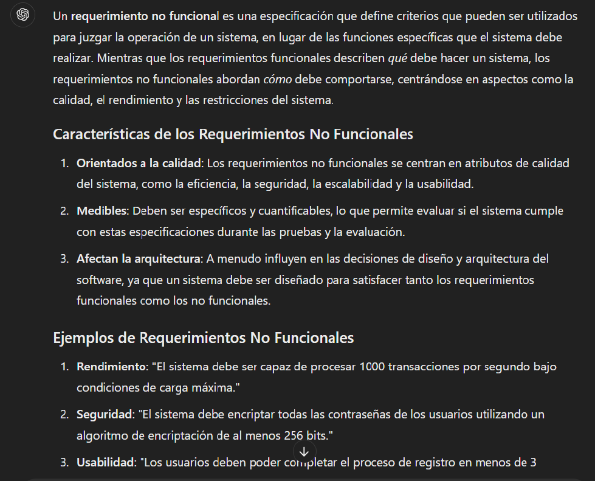
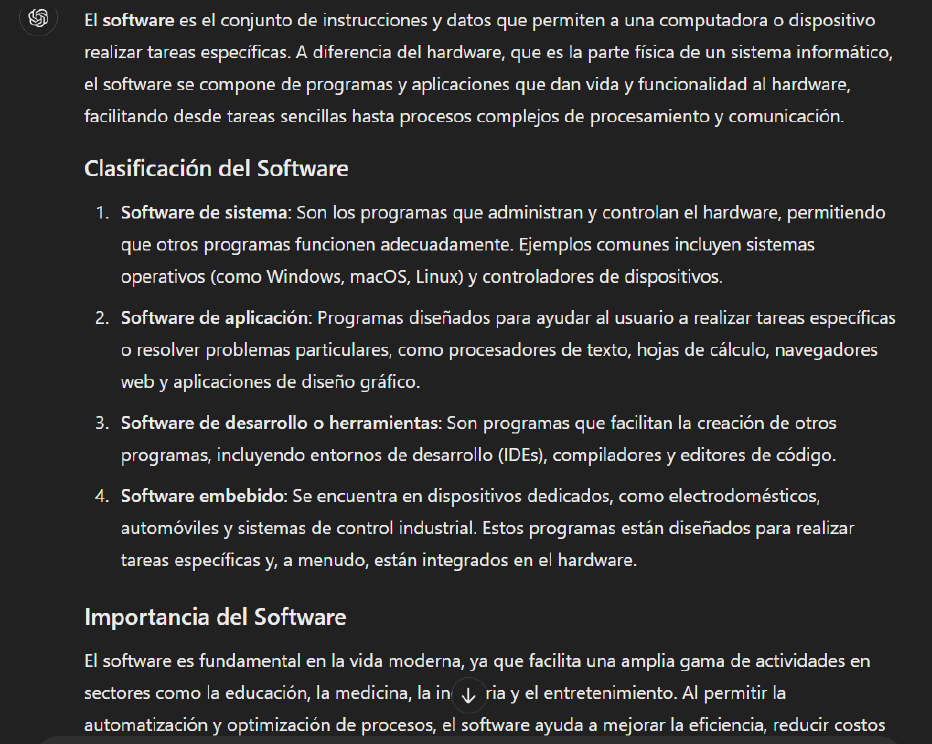
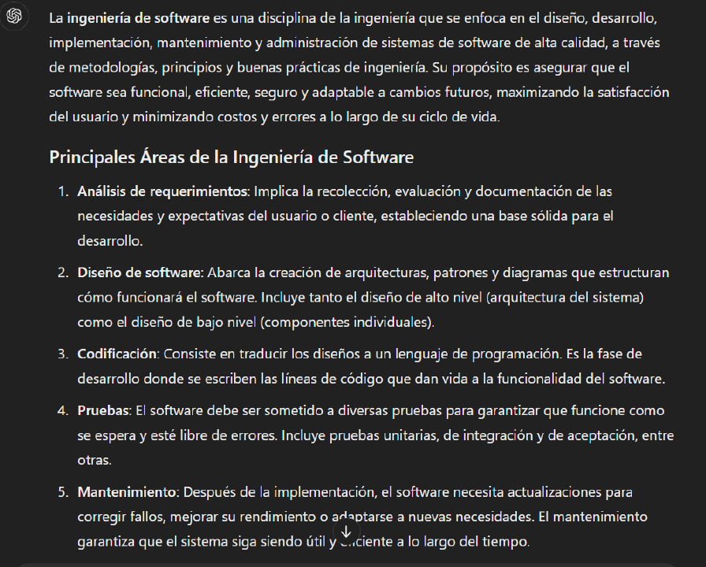
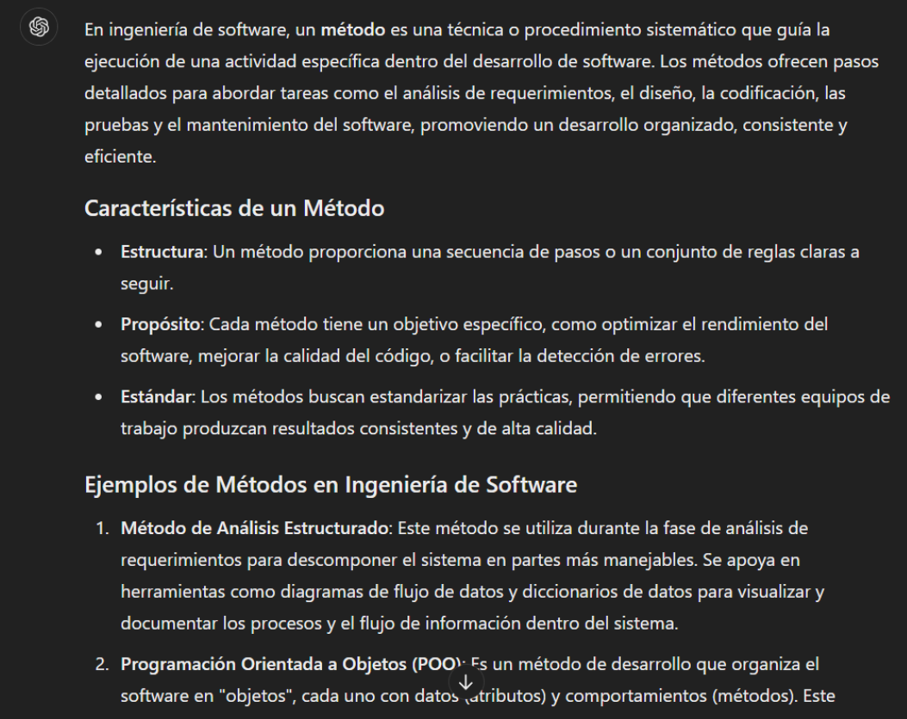
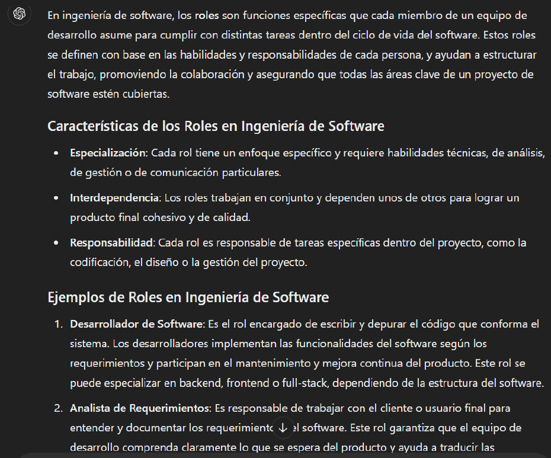
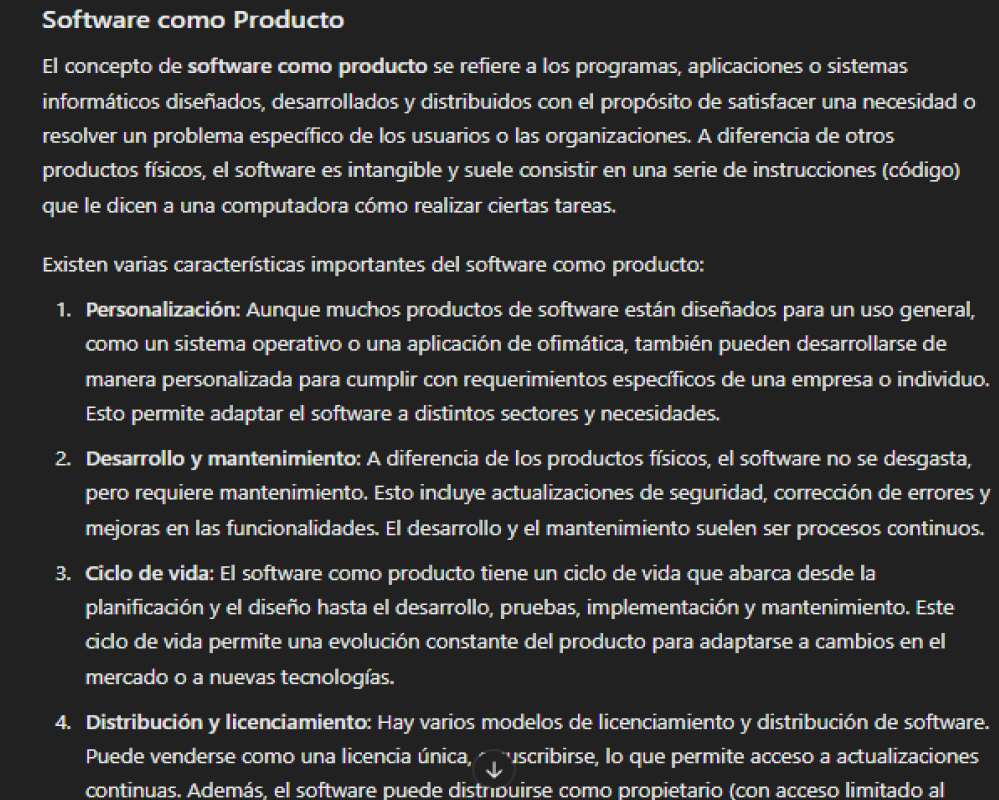

Prompts redactados de manera correcta para usar con ChatGPT
1. Eres un maestro en ingeniería de software. Redáctame que es un "requerimiento". Soy un estudiante que requiere la mejor definición.
2. Eres un maestro en ingeniería de software. Redáctame que es un "requerimiento Funcional. Soy un estudiante que requiere la mejor definición.
3. Eres un maestro en ingeniería de software. Redáctame que es un "requerimiento No Funcional. Soy un estudiante que requiere la mejor definición.
4. Eres un maestro en ingeniería de software. Redáctame de manera profesional que es el "Software" Soy un estudiante que requiere la mejor información.
5. Eres un maestro en ingeniería de software. Redáctame de manera profesional que es la "Ingeniería de Software" Soy un estudiante que requiere la mejor información.
6. Eres un maestro en ingeniería de software. Redáctame de manera profesional que un "Método", con sus ejemplos Soy un estudiante que requiere la mejor información.
7. Eres un maestro en ingeniería de software. Redáctame de manera profesional que son los "Procesos", con sus ejemplos Soy un estudiante que requiere la mejor información.
8. Eres un maestro en ingeniería de software. Redáctame de manera profesional que son los "Roles en Ingeniería de Software", con sus ejemplos Soy un estudiante que requiere la mejor información.
9. Soy un estudiante de primer año de la licenciatura Ingeniería de Software, redáctame sobre "Software como producto" como si fueras un profesor que imparte el tema.